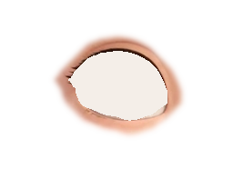
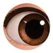
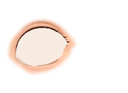
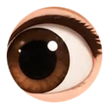
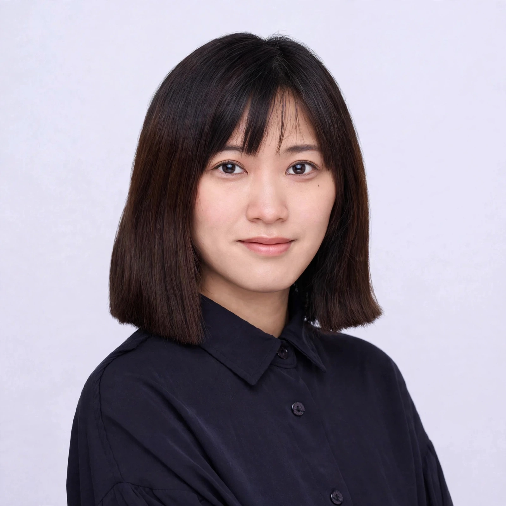

Hi，我是 Laly，擁有超過六年跨領域設計經驗的 Product Designer，負責 B2B、B2C 數位產品設計，累積軟體科技、品牌產業的經驗。現職外商科技公司擔任設計師近三年，並以實習 Product Owner 身分負責企業內部管理系統：負責與客戶確認需求範圍、主持 USM 工作坊，以敏捷開發方式帶領 4 位開發實習生，與 SM 及 Tech Coach 協作。專注於品牌設計、AI 自動化工作流、Web UI/UX 與使用者體驗。曾與成大產學等大專院校及專業社群合作講課、舉辦設計工作坊，致力於推動設計、品牌與產業之間的連結。
授課與舉辦設計工作坊。
同時負責產品規劃與設計 - 範圍涵蓋客服系統、行政後台與跨產品設計系統，並以實習 PO 身分負責企業內部管理系統，並運用 AI 自動化工作流優化設計與協作流程。
負責品牌視覺與電商網站整體規劃。
負責電商網站與 GIS 數位產品的體驗設計，服務 B2B 客戶。
以 Product Owner 的視角決定「該做什麼」，把模糊需求轉成清楚的流程與優先順序。
擅長資料密集的 B2B 後台：客服、會員、報表與結算，兼顧操作效率與風險權限控管。
建立元件、色彩與字體規範，讓設計與開發能快速對齊、穩定擴充。
以 Sprint Backlog 安排任務、追蹤進度，用 Jira 與 Confluence 紀錄與協調，確保專案依計畫推進。
擔任測試人員，分析問題、彙整回饋並追蹤改善結果。
帶領 4 位開發實習生，與 SM 及 Tech Coach 協作，並與大專院校及專業社群合作講課、舉辦設計工作坊。